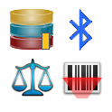

Tips & Troubleshooting¶
This page contains a few general usage tips for KDSmart.
Select any heading to expand/display or contract  the section.
the section.
Tips¶
Determining The Android Version¶
For support purposes, you may be asked to provide the version number of Android you are using. This is a simple check to perform on your phone or tablet by performing the following:
Step |
Action |
|---|---|
1. |
From the phone’s Home Screen (not in KDSmart) select |
2. |
Scroll down to the bottom and select either About Phone or About Device. |
3. |
Earlier versions the Android Version will appear in this list.
|
4. |
Later versions select the Software Info item and Android Version should appear at the top.
|

{kind=link}
{kind=link}
{kind=link}
Continue Scoring The Previous Trial¶
The name of the trial being scored is displayed on the KDSmart Home Screen. Just touch the  Start Scoring Button or the trial name to continue from where you were previously scoring.
KDSmart remembers the position or plot when you last exited the scoring activity for the trial (see the next section) and will present that plot to you.
Start Scoring Button or the trial name to continue from where you were previously scoring.
KDSmart remembers the position or plot when you last exited the scoring activity for the trial (see the next section) and will present that plot to you.
Quick Stop for a Break¶
1. If in Auto-advance Mode, exit using the Home Button in the top left corner: |
2. In the Scoring Screen, exit using the Home Button in the top left corner: |
3. Confirm the exit by selecting the Confirm Button in the popup: |
{kind=link}
{kind=link}
{kind=link}
Android Permissions¶
Android has introduced more stringent application security which affects KDSmart and any other Android application. Permission is required at the initial application installation, and may be requested again following installing any application updates.
Without allowing permissions an application will not work, or be unable to use all its functionality.
Upon initial KDSmart installation, a message similar to the following example will be displayed. Selecting Allow will enable KDSmart to work.
{kind=link}
If Deny is selected, KDSmart will display an advisory message (appearing in background of above image) with a Cancel Button and an|accept-btn2| Accept Button. Selecting:
{kind=link}
Cancel will stop KDSmart; and
Accept will cause Android to redisplay the approval request message again.
Selecting Don’t ask again, if it is displayed, and Deny will require a visit to Android settings to restart the request process. See Restoring/Changing Permissions below for instructions.
The next example shows the permission request following an update to KDSmart, which must be accepted before the application will open.
{kind=link}
Why Must I Grant Access?¶
Applications, including KDSmart, need to access the storage/memory on the device be able to:
Load your trial/nursery data;
To add to or make changes to that data; and
To save your data.
Quite simply, without allowing any permission, KDSmart Will Not Work.
Other features KDSmart can use on the device, such as the camera, microphone, etc. are also affected. The following table shows KDSmart permission requirements for the application or specific features to work:
Permission |
Description |
|---|---|
Camera |
Required if the camera is to be used by KDSmart. |
Location |
Required if the location option has been enabled. |
Microphone |
Required to record any audio notes using the microphone in KDSmart. |
Storage |
KDSmart will not work without being given storage permission. This is required to store any data on the device e.g. sample data, trial import or export, traits, tags, etc. |
Bluetooth |
Required if Bluetooth barcode scanners or scales are to be used. |
Restoring/Changing Permissions¶
At some stage you may have denied KDSmart access, e.g. to the camera, or Never ask again has been selected. These settings can be changed by using the following procedure.
Step |
Action |
|---|---|
1 |
On the Android device, select the system Settings Button |
2 |
Select Applications |
3 |
Select KDSmart |
4 |
Select Permissions |
5 |
Enable the required permission. Note: Selecting More or the highlighted menu button illustrated at (1) displays All permissions. These additional settings will also affect KDSmart behaviours for certain features. |
{kind=link}
Database Integrity Check¶
This database check and repair is mainly relevant in a situation where the following error occurs:
{kind=link}
This function checks the KDSmart database for the existence of duplicate samples for a trait instance, plot, sub-plot in each trial and removes the sample if the Trait Value is null.
If any duplicate samples are found containing a value, the following error message will appear:
“Duplicate Samples with a value Please contact Diversity Arrays and send them your Database”
will be displayed and the check/repair processing will stop.
Should repair display this message and is unable to proceed, please export the database and report the issue separately attaching the database in the email, or use an alternative file transfer method if the file is too large for email.
The option to export the database is located just above the Database Integrity Check Button.
Step |
Action |
|---|---|
1 |
At the Home Screen or menu by selecting the  Manage Devices Button. |
2 |
Within the Database Tab, select Database Integrity Check
|
{kind=link}
{kind=link}
Note
Depending upon the size of trials within the KDSmart database, this check could take more than 10-15 minutes. The check can be cancelled, however, any errors present may not be repaired.
{kind=link}
{kind=link}
{kind=link}
{kind=link}
{kind=link}
{kind=link}
Screen Orientation/Rotation¶
Android is able to lock or prevent the screen from rotating for all apps on the device. KDSmart behaves in accordance with this Android device setting.
{kind=link}
If Android Screen Rotation Is … |
Then KDSmart will … |
|---|---|
Enabled |
Respond to changes in the screen orientation. |
Disabled |
Not detect or respond to changes in the screen orientation. |
Note
Automatic rotation is intentionally disabled within the Scoring Screen to prevent undesirable screen changes. Various movements of the user and device in the field, such as bending down to inspect a sub-plot would cause frequent and unnecessary screen changes.
Step |
Action |
|---|---|
1 |
Ensure Android Screen Rotation is enabled. |
2 |
In KDSmart, exit from the scoring screen to another screen. |
3 |
Turn the device to the required position (portrait or landscape). |
4 |
Return to the Scoring Screen which should now display with the desired orientation. |
Lists and Select Mode for Multiple Selection¶
This is a generic tip for KDSmart trials, traits and tag selection lists. The example shown is the trial list.
{kind=link}
When a list of items is displayed, as the trial list in the left-hand image above, a long press on any Trial item will invoke Select Mode.
{kind=link}
Once in Select Mode, multiple items may be selected, by touching them as illustrated in the right hand image above where three trials have been selected. The number of items selected is indicated at the top right, in this example Selected:3 appears.
{kind=link}
Selecting the Action Button in the Action Bar (not shown), will perform the chosen action for the selected item(s).
{kind=link}
Caution
Please be take care when using the delete function which will remove the selected trials. Backup your data regularly to prevent any loss as delete is final.
What Data Transfer Method is Best?¶
This is dependent upon several factors influenced by your organisation’s implementation of KDDart platform components either fully, partially or not at all. For example, if KDSmart is being used ‘standalone’ without any other KDDart software, CSV files are required to load your data.
The following table outlines
Best When … |
Description |
|---|---|
KDSmart is to be used on its own |
Using KDSmart standalone, without any other KDDart software, means CSV files must be used to import and export all your trial, traits and tag data. Also useful if you want to try KDSmart with some of your trial data just to see how it works in the field. |
Several KDSmart devices used to score the same trial and KDXplore is being used |
Using KDXplore with KDSmart when a direct connection can be established for data transfer, or if a connection is not possible either CSV or KDX files can be used. |
Your Trials are stored in KDDart’s data layer and a direct connection is available |
This functionality is returning to KDSmart to directly connect with the KDDart database layer for trial selection and download or upload. |
Symbols and Buttons¶
The button symbols used in KDSmart are shown in the following table:
Button |
Term |
Description |
|---|---|---|
Trials |
Trials or nurseries refer to the experiments or research being conducted. |
|
Tags |
Manage the tags used in the trials. |
|
Traits |
Manage the traits used in the trials. |
|
Devices |
Manage devices (scanners, scales, etc.), Bluetooth, and database. |
|
Settings |
Manage the device settings and those that apply to all trials. |
|
Information |
Contextual help for KDSmart, information about KDSmart, and licensing. |
|
Start |
Start or Run button. |
|
Run (Demo DB) |
Start the active trial. A white border indicates the current setting is for a Demonstration database trial (Demo DB). |
|
Run (Production DB) |
Start the active trial. A yellow border indicates the current setting is for a Production database trial (sometimes referred to as Prod DB). |
|
Advance |
Step forward and advance to the next plot. |
|
Retreat |
Step backward and retreat to the previous plot. |
|
Plot |
Either a plot ID or a column and row pair that uniquely identifies an area (i.e. plot) within a trial. Within a trial, each combination or column/row must be unique. |
|
Organism Types |
Within settings, the type of organism being measured can be specified. This appears in the Scoring Screen. |
{kind=link}
{kind=link}
{kind=link}
{kind=link}
{kind=link}
{kind=link}
{kind=link}
{kind=link}
{kind=link}
{kind=link}
{kind=link}
{kind=link}
Troubleshooting¶
Block Trial Issues¶
The 3.0.28 update has resolved some database issues with block trials. However, some users may find that after updating KDSmart, their block trials do not work anymore. This is due to the trials not being compatible with the new database version. The following instructions outline a quick fix for this issue:
Step |
Action |
|---|---|
1. |
Navigate to the Devices Screen. The image below shows how to get there from the Home Screen. Select the Devices Button at . |
2. |
A Fix Block Trials Button has been added and can be seen in the below image at . |
3. |
A list of block trials will be displayed. Select the trial that you want to fix and it should be converted to be compatible with the newest version of KDSmart. |
{kind=link}
{kind=link}
Plot Attribute Alias Issues¶
The 3.0.28 update to KDSmart has involved a change in the way that block trials are handled. Some users may experience issues with the plot attribute alias of a block trial if they try to import a block trial to KDSmart 3.0.28 if it was exported from an earlier version of KDSmart.
If you have this issue, KDSmart will present options for setting the correct plot attribute alias which can be seen in the below image. Choose the field that should match up with the plot attribute alias and the file will be converted for you.
{kind=link}